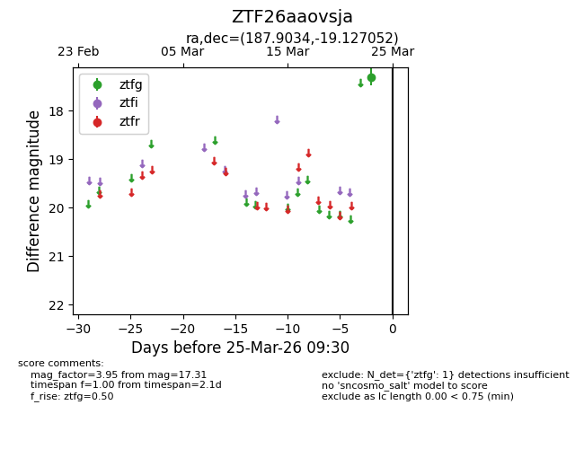
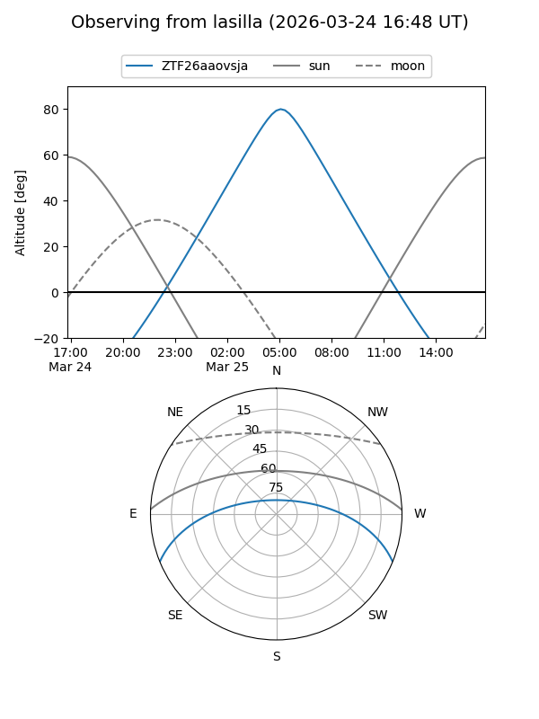
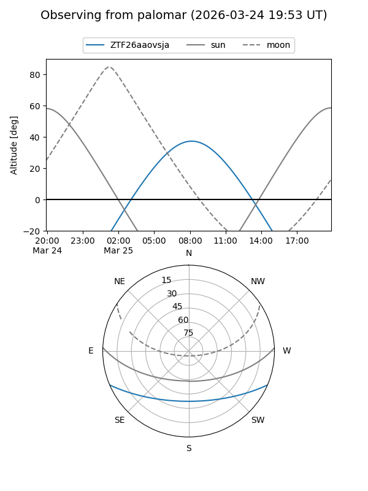

ZTF26aaovsja
Target ZTF26aaovsja at 2026-03-25 09:33
Aliases and brokers:
FINK: link
Lasair: link
ALeRCE: link
alt names
ZTF26aaovsja (ztf,fink_ztf)
Coordinates:
equatorial (ra, dec) = 187.9034,-19.12705
equatorial (HMS+DMS) = 12:31:36.81,-19:07:37.39
galactic (l, b) = (296.4715,+43.49588)
Flags:
Photometry:
last ztfg=17.31
1 ztfg detections
Lightcurve

Visibility


Additional plots